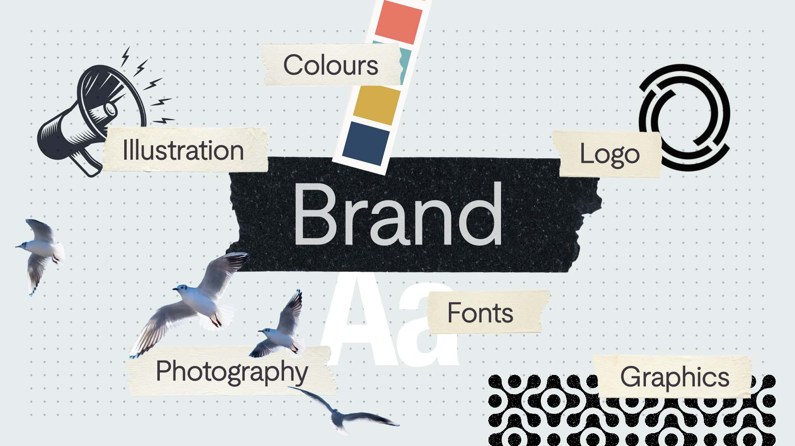

In Progress / Thoughts
What is a brand?
Story, personality, and perception — a brand is more than you might think.
Most people these days have at least a passing familiarity with the idea of a brand. A big part of how we consume culture is how we interact with brands, from social media accounts of multinational corporations, to much-loved smaller brands that connect on a personal or social level.
As culture has become more mediated through digital platforms and advertising, the public has become more design literate, understanding that the way a piece of communication looks and sounds is formed by a series of decisions. So when we ask, 'what is a brand?' a lot of people would reasonably respond that a brand is a logo, a choice of fonts, a colour scheme and perhaps some graphic elements.
And they wouldn't be wrong. These are, generally speaking, the main elements that come together to form the look and feel of a brand. But when we run our branding processes, we find it helps to zoom out a bit.

When we think of a brand we're familiar with, it's not unlike thinking of someone we know, or perhaps a celebrity. In the same way that a friend or coworker can be funny, loud, and brash, or reserved, thoughtful and quiet, so too can a brand. What we refer to as a 'brand' is how an organisation is perceived by its audience. Take the obvious example, Apple: some people feel a real affinity to the company and perceive it as cool, calm and beautifully simple, while others might see them as lofty, somewhat pretentious and overhyped.

So really a brand is a narrative in someone's mind — a story inferred by the user, customer or citizen. Let's look at another obvious example: Nike. Through their branding and communication, Nike tells a story about the world, their customer and themselves. Nike presents the world as a challenge to be bested, and their customers as ambitious go-getters. In this world, Nike provides the products and the lifestyle that matches the perceived ambition of their audience, setting themselves up as the cutting edge of technology, sportswear and culture.
The work of branding is to take control of this narrative. To tell a compelling story about your own organisation that rings true to your audience and motivates them to engage with your work. A story will be formed whether or not you tell it, and the danger in neglecting your brand is that you will have little-to-no control over how your organisation is perceived.
What is your brand?
When it comes to thinking about your own brand, before considering things like your logo, fonts and colours, think about perceptions. First, think about how *you* perceive your own organisation. Think back to when you first joined, or when you started it: something attracted you to the work, the team, the idea. So if your organisation was a friend or a coworker, how would you describe them? Are they warm, caring and engaging, or straightforward, confident and cool? Are they funny? Playful? Sociable? Thoughtful? Brainstorming a list of these words will help you get a feel for how you perceive your brand and want your organisation to be perceived, and might even help you identify what you want to change.
This is the beginning of our rebrand process: taking our partners through their own perceptions and starting to build a shared story of their organisation and their work. We talk about what motivates people, why they are doing this work, what they want to achieve personally and collectively, who they need to engage and how.
A branding process can (and should) be transformative for a campaigning organisation. It can get your team on the same page, recognising their shared mission, vision and values, working with a renewed confidence. For your audience, your brand can fill in the gaps between your work and their needs and wants, and present your authentic personality for them to engage with. For your funders and supporters, your brand can inspire confidence and help them celebrate and champion your work.